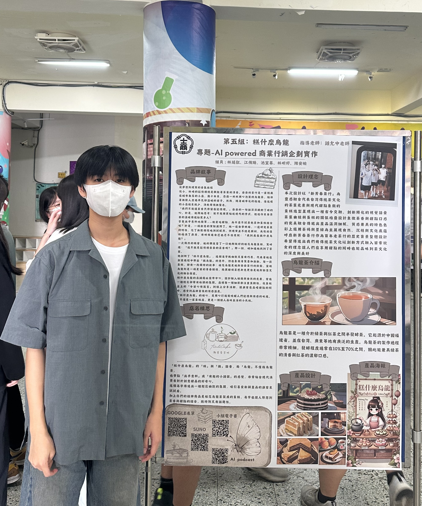
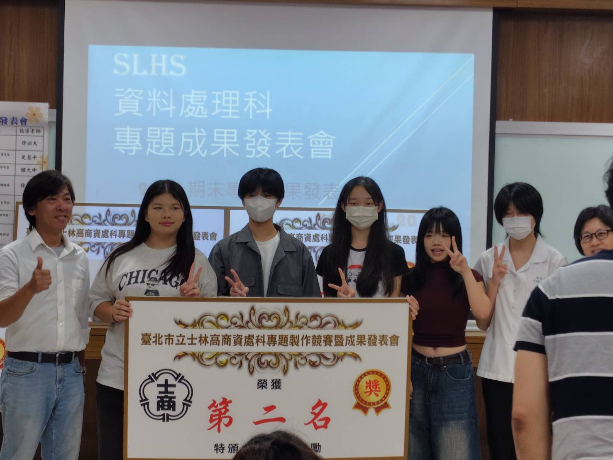

結合 AI 工具與商業行銷企劃， 以烏龍茶蛋糕為核心商品， 打造具品牌特色與市場定位的創新專題。
糕什麼烏龍
商業行銷企劃
AI 行銷工具
榮獲第二名
本專題以「AI輔助商業行銷企劃」為核心， 嘗試探討人工智慧工具於品牌行銷與市場分析中的應用可能性。 我們以烏龍茶蛋糕作為核心商品， 結合台灣茶文化特色與甜點市場需求， 規劃品牌「糕什麼烏龍」之產品定位與行銷策略。 在專題製作過程中， 我們透過市場調查、問卷分析與消費者需求研究， 建立目標客群輪廓， 並運用 ChatGPT、Luma AI、Krea AI 等工具， 協助完成資料分析、視覺設計與行銷素材製作， 提升企劃整合效率與品牌呈現完整度。 本次專題不僅讓我實際體驗 AI 工具於商業領域中的應用方式， 也培養我在問題分析、團隊合作與簡報表達上的能力。 最終，團隊於專題成果發表中榮獲第二名， 進一步強化我對資訊科技與商業整合領域的學習興趣。
在觀察現今甜點市場趨勢後， 我們發現具有在地特色與文化元素的產品， 更容易建立品牌辨識度與市場記憶點。 因此，我們希望將台灣烏龍茶文化與甜點商品結合， 透過創新方式重新詮釋傳統茶元素， 並嘗試規劃符合年輕族群需求的品牌定位與行銷策略。
隨著人工智慧技術快速發展， AI 已逐漸被應用於資料分析、視覺設計與行銷企劃等領域。 因此，我希望透過本次專題， 實際嘗試將 AI 工具應用於商業企劃流程中， 並從中了解科技如何提升資訊整合效率、 優化品牌行銷內容與輔助決策分析。 透過本次研究， 我也更加確立自己對資訊科技與商業管理整合領域的學習興趣。
運用 ChatGPT 協助整理與分析問卷資料， 歸納消費者偏好與市場需求， 並透過 AI 工具生成行銷素材與品牌內容， 提升資料整合效率與企劃完整度， 培養資訊分析與科技應用能力。
身為小組長，負責整體專題進度規劃與任務分配， 依據組員專長進行分工，確保各階段工作能如期完成。 在執行過程中，持續追蹤各組員進度並進行整合， 協調不同意見與工作內容，避免重複或資訊落差， 提升團隊溝通效率與專案整體一致性。
擔任專題成果發表與團隊溝通角色， 負責統整企劃內容並向評審進行簡報說明， 在過程中培養口語表達、 臨場應變與團隊協調能力， 提升跨領域整合與溝通能力。
透過問卷調查與市場資料蒐集， 分析消費者對甜點產品與茶類商品的偏好， 建立目標客群輪廓， 作為後續品牌企劃與產品定位依據。
以烏龍茶蛋糕作為核心商品， 規劃品牌名稱、產品特色與市場定位， 並思考品牌形象與目標客群之間的連結， 建立完整行銷企劃方向。
運用 ChatGPT、Luma AI 與 Krea AI 等工具， 協助完成資料分析、視覺設計與行銷素材製作， 提升企劃效率與品牌內容完整度， 並探索 AI 與商業整合應用的可能性。
完成專題簡報、品牌展示與成果發表， 並向評審說明市場分析、 品牌理念與 AI 工具應用成果， 最終於專題成果競賽中榮獲第二名。
專題競賽成果
完成市場分析、品牌企劃與AI應用整合，於成果發表中獲獎
跨工具整合應用能力
使用 ChatGPT、Luma AI、Krea AI、Canva 等完成行銷內容製作
專案執行完整度
從市場調查、品牌設計到成果發表全流程完成
※ 成果結合 AI 工具應用與商業行銷企劃完整實作

展示「糕什麼烏龍」專題成果實體與團隊合影， 呈現品牌設計與行銷企劃實作成果。

在專題成果發表中榮獲第二名， 展現市場分析、AI應用與團隊合作整合能力。
在專題初期，由於任務分配較為模糊，部分組員對自身負責內容理解不一致， 導致進度落差，整體整合效率下降。
解決方式： 重新調整分工方式，依照組員能力與專長重新分配任務， 並建立固定進度回報機制（每週確認完成進度）， 提升團隊協作效率與透明度。
在使用 ChatGPT、Krea AI 與 Luma AI 時， 初期生成的內容與預期品牌風格不一致， 例如圖片風格偏差、行銷內容不夠精準。
解決方式： 透過反覆優化 Prompt（提示詞），並整理成功範例模板， 逐步建立AI輸出規則，使生成結果更符合品牌定位， 提升素材品質與穩定性。
在問卷與市場資料分析過程中， 資料來源分散且內容龐雜， 初期難以快速整理出有效結論。
解決方式： 使用 ChatGPT 協助分類與摘要資料， 並建立表格化整理方式， 將資料轉換為可視化結論， 提升分析效率與決策清晰度。
透過本次專題，我從單純使用 AI 工具， 進一步學會如何將 ChatGPT、Krea AI 與 Luma AI 實際整合至商業行銷流程中。 我理解到 AI 不只是生成工具，而是可以作為 資料整理、創意發想與內容優化的輔助系統， 提升整體企劃效率與品質。
在專題執行過程中，我學會將問題拆解為不同層面， 例如團隊分工、資料整理與工具應用等， 並逐步找出改善方法。 透過「問題分析 → 方法調整 → 結果驗證」的過程， 我建立了更有系統的解決問題思維， 也讓專題執行更加穩定。
本專題結合資訊科技與商業行銷兩個領域， 讓我實際體驗跨領域整合的過程。 從市場分析、品牌設計到簡報發表， 我學會如何統整不同資訊並轉化為具體成果， 同時也提升了時間管理與團隊協作能力。
透過本次專題，我更加確立自己對 「資訊科技 × 商業應用 × AI 數位行銷」領域的興趣。 未來希望能進一步學習資料分析、數位行銷策略與 AI 應用技術， 並將此次專題經驗延伸至更完整的商業數據分析與系統化專案設計， 持續強化跨領域整合能力。